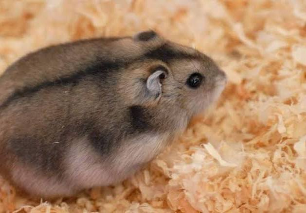
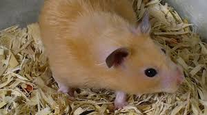

El hámster ruso es un pequeño hámster enano, popular como mascota por su naturaleza tranquila y curiosa, con un pelaje grisáceo y vientre blanco y una franja negra dorsal que puede cambiar a blanco en invierno. Mide entre 7 y 11 cm y vive entre 2 y 3 años. Es un animal nocturno y crepuscular que necesita una rueda para hacer ejercicio y escondites. Su dieta debe ser rica en proteínas y puede complementarse con frutas y verduras, pero se deben evitar los azúcares.
El hámster sirio (también llamado hámster dorado) es un roedor solitario y territorial, nativo de Siria, que utiliza bolsas en sus mejillas para almacenar comida y construyen madrigueras complejas. Viven entre 2 y 3 años y son de color original dorado, aunque existen otras variedades de pelaje. A pesar de ser generalmente dóciles con los humanos, pueden ser muy agresivos con otros de su especie, por lo que se recomienda mantenerlos solos en casa.
